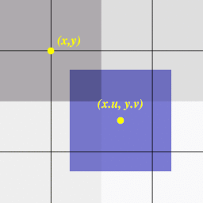

| Autor: | Wojciech Muła |
|---|---|
| Dodany: | 16.02.2002 |
| Aktualizacja: | 14.12.2003 |
Contents
Dokonując różnych przekształceń bitmap (np. efekt soczewki, czy teksturowanie wielokątów) otrzymuje się współrzędne bitmapy o wartościach ułamkowych (x.u, y.v). Można oczywiście brać pod uwagę tylko części całkowite i pobierać piksel z bitmapy o współrzędnych (x, y), ale wówczas efekt nie będzie najlepszy.
Rysunek przedstawia pozycję piksela o współrzędnych rzeczywistych P = (x.u, y.v); współrzędna fizycznego piksela określają jego środek.
Filtrowanie bilinearne polega na policzeniu jasności piksela, jako sumy ważonej sąsiednich pikseli. Waga danego piksela jest uzależniona od stopnia pokrycia przez filtrowany piksel P. Wymiary piksela można ustalić dowolnie, ja przyjmuję że bok piksela ma długość 1.
Aby uprościć zapis wprowadźmy oznaczenia:
wówczas stopień pokrycia poszczególnych pikseli wyniesie:
Kolor piksela P wyznaczany jest z zależności:
P = A ⋅ (1 − u) ⋅ (1 − v) + B ⋅ u ⋅ (1 − v) + C ⋅ (1 − u) ⋅ v + D ⋅ u ⋅ v
Podstawową wadą, przy bezpośredniej implementacji tego wzoru, jest ilość mnożeń — aż 8 na jeden piksel. Wyciągając (1 − v) i v przed nawiasy równanie uprości się do postaci:
P = (1 − v)[A ⋅ (1 − u) + B ⋅ u] + v[C ⋅ (1 − u) + D ⋅ u]
Wyrażenia w nawiasach kwadratowych nie zależą już od zmiennej v — można liczyć je niezależnie. Uproszczenie tych wyrażeń, tak by wymagane było tylko jednego mnożenie, jest pokazane poniżej.
temp1 = A ⋅ (1 − u) + B ⋅ u = A + u ⋅ (B − A)
W praktyce filtrowanie będzie przebiegało według schematu:
temp1 = A + u*(B-A);
temp2 = C + u*(D-C);
P = temp1 + v*(temp2-temp1)
Zakładam, że zarówno u i v będą w przedziale 0..255 (fixed point 8:8). Pochłaniającą najwięcej czasu czynnością jest mnożenie, wobec czego można tablicować wyniki mnożenia.
int mul_tbl[256][256];
for (i=0; i<256; i++)
for (j=0; j<256; j++)
mul_tbl[i][j] = i*j;
//...
int u,v;
int a,b,c,d;
int temp, temp;
// ...
temp = b-a;
if (temp < 0) a -= mul_tbl[u][-temp]
else a += mul_tbl[u][temp]
temp = d-c;
if (temp < 0) c -= mul_tbl[u][-temp]
else c += mul_tbl[u][temp]
a >>= 8; // dzielenie przez 256
c >>= 8; //
temp = c-a;
if (temp < 0) a -= mul_tbl[u][-temp]
else a += mul_tbl[u][temp]
a >>= 8; // wynik jest w a
Czynnikiem rzutującym na prędkość są instrukcje warunkowe, można rozszerzyć zakres tablicy, by je pominąć.
int mul_tbl[256][512];
for (i=0; i<256; i++)
for (j=-255; j<256; j++)
mul_tbl[i][255+j] = i*j;
// ...
a += mul_tbl[b-a+255];
c += mul_tbl[d-c+255];
a >>= 8;
c >>= 8;
a += mul_tbl[c-a+255];
a >>= 8;
W obu przypadkach, podczas generacji tablicy można wynik od razu dzielić przez 256, uniknie się wówczas trzech przesunięć bitowych.
Podstawową wadą przedstawionych metod są dość duże tablice (minimum 130kB), co praktycznie gwarantuje to problemy z pamięcią podręczną, tzn. dużymi opóźnieniami spowodowanymi nietrafieniami w cache.
Kodując algorytmy przedstawione w poprzednim punkcie podstawowym problemem jest odejmowanie — niestety trzeba rozszerzać zakresy liczb. Poniżej przykładowy kod dla ostatniej metody.
; edi -> mul_tbl[u][0]
; esi -> mul_tbl[v][0]
;
movzx eax, byte [pixelA]
movzx ebx, byte [pixelB]
movzx ecx, byte [pixelC]
movzx edx, byte [pixelD]
sub ebx, eax
sub edx, ecx
add ebx, 255
add edx, 255
add eax, [edi + ebx*4] ; ebx*4 bo sizeof(mul_tbl[0][0]) == 4
add ecx, [edi + ebx*4] ; gdyby rozmiar ten był mniejszy mielibyśmy kolejne
; kłopoty
sub ecx, eax
add ecx, 255
add eax, [esi + ecx*4]
W pierwszych procesora Pentium wykonanie rozkazu movzx zajmuje 4 cykle, dodatkowo dochodzą zatrzymania spowodowane AGI. Kod i bez tego będzie niezbyt szybki. Można zaimplementować, kosztem liczby odwołań do pamięci, pierwszą postać wzoru. Nie będzie natomiast koniecznym rozszerzanie zakresu.
a ⋅ (1 − u) + b ⋅ u
Dla u i v zapisanych w fixed point wyrażenie 1 − u przyjmie postać 256-u == not u.
; założenia: ; rejestry eax, ebx, ecx, i edx zostały wyzerowane. ; ; byte mul_tbl[256][256]; ; ; inicjacja mul_tbl: ; for (i=0...) ; for (j=0...) mul_tbl[i][j] = (i*j) >> 8; ; mov ah, [pixelA] ; ładując do starszego bajtu mov bh, [pixelB] ; wynik jest automatycznie mnożony mov ch, [pixelC] ; przez 256 mov dh, [pixelD] ; mov edi, [u] ; edi = u mov esi, edi ; xor esi, 0x000000ff ; esi = not u mov ah, [esi + mul_tbl + eax] ; add ah, [edi + mul_tbl + ebx] ; al = (255-u)*al + u*bl mov ch, [esi + mul_tbl + ecx] ; add ch, [edi + mul_tbl + edx] ; cl = (255-u)*cl + u*dl mov edi, [v] ; edi = v mov esi, edi ; xor esi, 0x000000ff ; esi = not v mov ah, [esi + mul_tbl + eax] add ah, [esi + mul_tbl + ecx]
Kod się nieco uprościł, ale zapewniam, że również teraz będą problemy z cache — nawet większe niż w poprzednim przypadku.
Słabą stroną starszych Pentiumów jest powolność mnożenia, teraz na szczęście jest inaczej.
; cl - u
; bl - v
mov al, cl ;
xor al, 0xff ; al = not u
shl ecx, 16
mov cl, al ; ecx = | 0 | u | 0 |not u|
mov al, bl ;
xor al, 0xff ; al = not v
shl ebx, 16
mov bl, al ; ebx = | 0 | v | 0 |not v|
; ...
; w pętli
xor eax, eax ;
mov al, [pixelB] ;
shl eax, 16 ;
mov al, [pixelC] ; eax = | 0 |pixB| 0 |pixA|
mul ecx ; eax = | pixB * u |pixA*not u|
; interesujące są tylko starsze bajty cząstkowych wyników
; de facto wynik podzielony przez 256
; eax = |hiB|loB|hiA|loA|
mov al, ah ; eax = |hiB|loB|hiA|hiA|
rol eax, 8 ; eax = |loB|hiA|hiA|hiB|
add al, ah ; eax = |.......|...|hiA+hiB|
; powyższy kod należy powtórzyć jeszcze 2 razy: by uzyskać hiC+hiD,
; oraz ostateczny wynik.
W zestawie instrukcji MMX rozkaz pmaddwd który idealnie nadaje się do użycia przy filtrowaniu bilinearnym.
; wejście: mm0 = | d | c | b | a |
; mm1 = | u | 1-u | u | 1-u |
; mm2 = | 0 | 0 | v | 1-v |
pmaddwd mm0, mm1 ; mm0 = |d*u + c*(1-u)|b*u + a*(1-u)|
; ale wyniki mnożeń są < od 0x10000
; = | 0 | d+c | 0 | b+a |
movq mm3, mm0 ;
psrlq mm3, 16 ; mm3 = | 0 | 0 | d+c | 0 |
por mm0, mm3 ; mm0 = | 0 | 0 | d+c | b+a |
psrlw mm0, 8 ; podziel przez 256
paddw mm0, mm2 ; mm0 = | 0 | 0 | 0 |dc*v+ba*(1-v)|
psrlw mm0, 8
Wiem, że nie wszystkie metody zaprezentowane metody są efektywne, chciałem pokazać różne rozwiązania tego problemu bo jest on dość istotny --- wszak nikt nie lubi tzw. pikselizacji.
Używając tablic warto zastanowić się nad ich organizacją — polecam lekturę dokumentu Intela Optimization Manual (nr 242816), szczególnie rozdział 3.5 Data arrangement for improved cache performance.